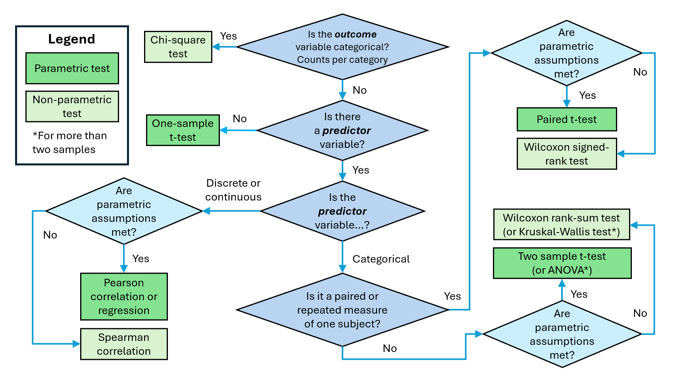
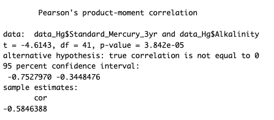

30 Q1: Pearson Correlation
Research Question:
Is there a relationship between body morphology and body mass in female Adélie penguins?
Imagine that scientists are considering setting up a series of underwater cameras on the Palmer Archipelago in Antarctica. They want to use the existing data to see if they can use the resulting images to estimate penguin body mass, which is much cheaper and easier than catching the penguins and weighing them.
We will use the the existing dataset to test the feasibility of this plan.
There are three morphological metrics in the dataset:
- Bill length
- Bill depth
- Flipper length
We will focus on just female Adélie penguins because we know that there is substantial variation based on species and sex.
Questions:
Looking at the research question and the data:
- What do you think the outcome variable is?
- What kind of variable is it (e.g. categorical, discrete, continuous)?
- What do you think the predictor variable is?
- What kind of variable is it (e.g. categorical, continuous)?
Looking at The Flow Chart™:
- How far could you navigate through The Flow Chart™ based on your answers above?
- Can you get all the way to a test? Why or why not?

30.1 Prepare the data and Check assumptions
First, we will need to subset the specific data we want (female Adélie) from the larger dataset.
Tips!
Remember you must use == to logically compare column values to select the appropriate rows.
You can use the & symbol to subset for values in two different columns at the same time.
mydf_sub <- subset(mydf, col1 == "value_A" & col2 == "value_B")Then, we need to check whether or not the underlying assumptions hold before we can start doing correlation analysis.
There are two types of correlation analysis, parametric and non-parametric. The more powerful, parametric version assumes that the data are Normally-distributed, although it is relatively robust if the data aren’t perfectly Normal.
Use your function examine_norm() from weeks 3 and 4 to determine whether or not the data four all four variables of interest (the three morphological measurements and body mass) are Normally-distributed.
Questions:
- Are any of the variables Normally-distributed?
- How big are the samples? Can we proceed with a correlation test?
- Do we want body mass on the x-axis or y-axis? Why?
You can make a simple x-y scatter plot in R using the plot() function. They are not as pretty as figures made with ggplot() but are easier for simple figures to examine your data (just like hist() and boxplot()).
You need to provide the plot() function with two lists of numbers (one for your outcome variable and one for your predictor variable) using the model formula - e.g. y ~ x. There are two ways to do this:
- Refer to each column directly with \(, i.e. the way we have been doing it previously, as `df\)y ~ df$x`
- If both columns are from the same data frame, it can be easier to provide the data frame with the
data =argument, and then just use the column names in the model formula
For example, the code below will make two identical plots with pred_var on the x-axis and outcome_var y-axis.
# Two ways to provide the data to make the same scatter plot
plot(mydf$outcome_var ~ mydf$pred_var)
plot(outcome_var ~ pred_var, data = mydf)Questions:
Looking at the scatter plots.
- Do any of them suggest that there might be a linear relationship between the variables?
- Do any of them suggest there might be a non-linear relationship between the variables?
Warning! Remember: it is essential to create a scatter plot first, before you start doing correlation or regression tests!
Question: Why is it essential to create a scatter plot first?
30.2 Hypotheses
Next, we write down our null and alternative hypotheses.
\(\mathrm{H}_0\): There is no linear correlation between body mass and (X, Y, Z).
\(\mathrm{H}_\mathrm{A}\): There is a linear correlation between body mass and (X, Y, Z).
where X, Y, and Z are bill length, bill depth, and flipper length.
30.3 Pearson correlation test
In R, the function cor() will calculate a correlation coefficient between two variables.
However, we want to perform a full correlation test (that also provides 95% CIs and P-values), so we will use the function cor.test() instead.
For both of these functions:
- Provide the variables as the first two arguments, formatted as lists of numbers (i.e. the columns in your data frame)
- The default calculation is the parametric Pearson correlation, which assumes your data are Normally-distributed. (Parametric and Pearson both start with P, which can help you to remember.)
- You can add an optional third argument,
method = "spearman", to calculate the non-parametric Spearman rank correlation for non-Normally distributed data.
Warning! In the psych package there is a function called corr.test() - with two rs instead of one r - DO NOT ACCIDENTALLY USE THIS TEST INSTEAD!
Calculate the Pearson correlation between body mass and each of the three morphological variables.
The output will look like the image below.

The most important things to look at are:
- The P-value
- The correlation coefficient (r) is which listed here as “cor”, and its 95% confidence intervals.
If the 95% CIs do not include zero, the P-value will be significant.
Question: Based on your correlation test results:
- Which parameter has the stronget relationship with body mass (i.e. has the biggest r value?)
Write down a formal sentence or two describing the outcome of the correlation tests. This should include:
- the overall result of the research question(s)
- the name of the test(s)
- the test statistic, t
- the degrees of freedom, df
- the correlation coefficient, r
- the P-value